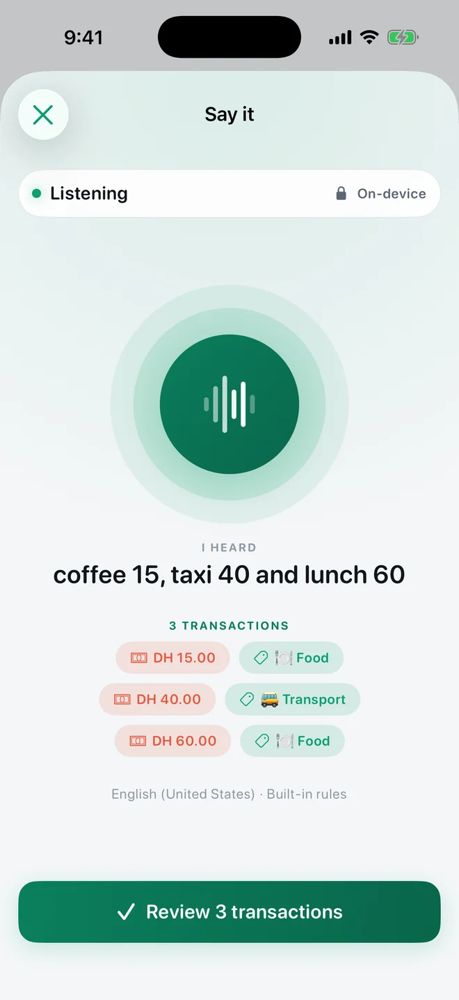
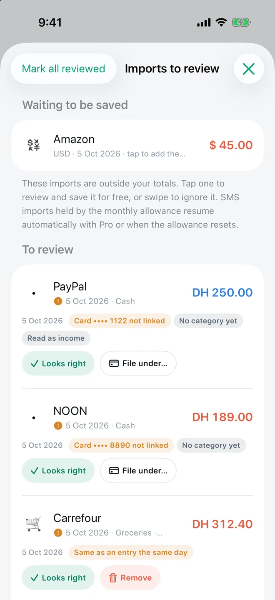
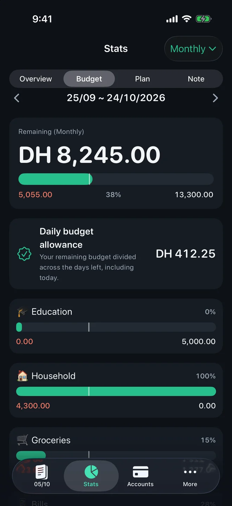
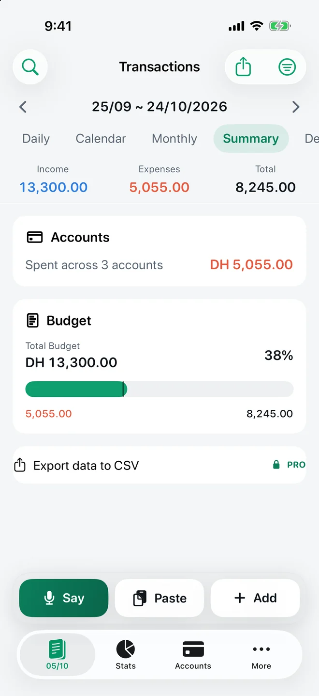
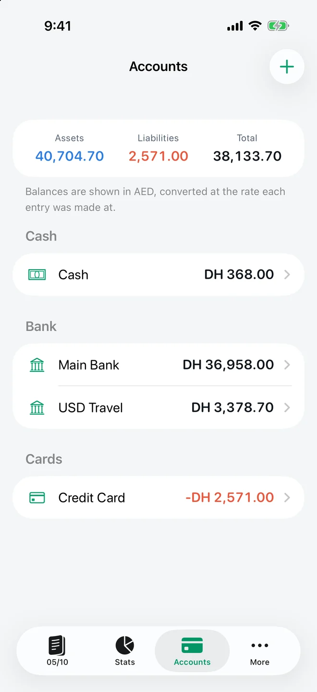
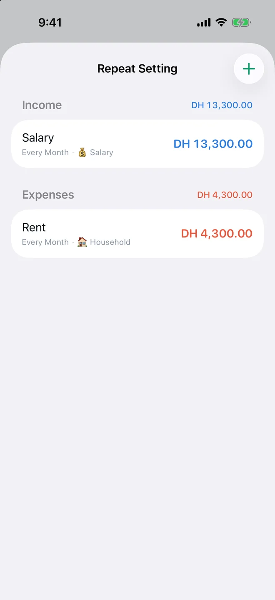
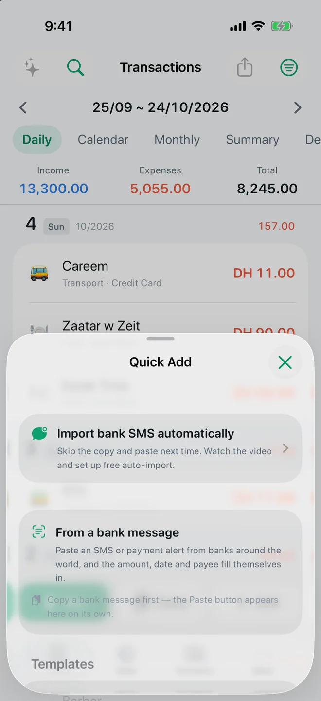
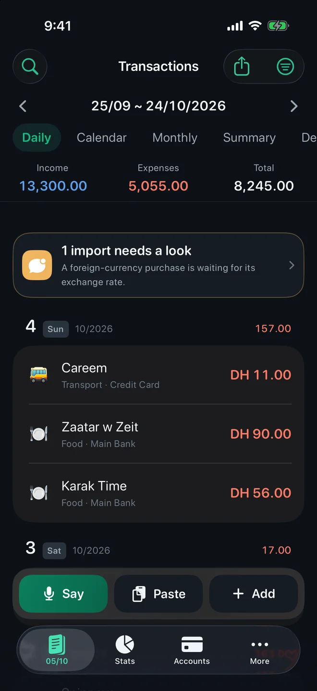

Everything TrackExpenses does.
Expense Tracker: SMS & Voice (TrackExpenses) is an iPhone and iPad money manager that cuts the typing out of keeping a ledger. Say several purchases in one sentence, let supported bank SMS alerts file themselves, and budget in a month that starts on your payday. No bank login and no app account.
Say it voice entry
Say “coffee 15, taxi 40” and review one draft per purchase before saving.

Bank SMS import
A Shortcuts automation hands bank alerts to the app; it files amount, merchant and card.

Budgets, pacing & payday month
Budgets that start on payday and show where today falls, plus Pro forecasts.

Reports, calendar & insights
Five ways to read the same period, plus cash flow and category changes.

Multi-currency
Spend in dollars, report in dirhams: every total converts to one main currency.

Accounts, cards & recurring
Cash, bank and card balances, transfers that don’t double count, recurring bills.

Widgets, Quick Add & Shortcuts
Log from the Home Screen, Lock Screen, Control Center, Siri or a saved template.

Private by design
No bank login, no account, App Lock, and a ledger kept in your own iCloud.

Free and Pro, side by side
The free ledger is complete: you never lose access to your history, and manual entry is unlimited. Pro removes limits and adds the hands-free and planning tools. Prices and any trial are shown in the app before you buy.
| Feature | Free | Pro |
|---|---|---|
| Manual transactions, income, expenses, transfers | Unlimited | Unlimited |
| Budget month that starts on any day (payday) | ✓ | ✓ |
| Category budgets with today pacing marker | ✓ | ✓ |
| Daily, calendar, monthly, summary and description views; stats and search | ✓ | ✓ |
| Bank SMS automatic imports | 20 successful per calendar month per device | Unlimited |
| Say it voice entry | — | ✓ (compatible devices and languages) |
| Daily budget allowance, forecasts and what-if plans | Budget facts and history | ✓ |
| Accounts | 3 | Unlimited |
| Recurring rules | 3 | Unlimited |
| Multiple currencies, receipts, widgets, Shortcuts, App Lock, reminder | ✓ | ✓ |
| CSV export | Selected month | Any date range |
| CSV import and full JSON backup/restore | — | ✓ |
| Themes and alternate app icons | — | ✓ |
| Private iCloud sync | ✓ | ✓ |
Pro is available as a monthly or annual subscription or a one-time lifetime purchase. Lifetime does not renew.
Who it suits
- People whose bank texts every purchase — common in the UAE, Saudi Arabia, India and much of Africa and Asia. The reader understands English and Arabic alerts and many other languages.
- People paid monthly on a fixed day who want the budget, charts and totals to run payday to payday.
- Cash spenders and busy people who would rather say “taxi 40” than open a form.
- Anyone who won't hand a budgeting app their bank password. Nothing here connects to your bank.
- Travellers and expats spending in more than one currency.
It is not a bank-sync app, it doesn't pay bills, and the interface is in English. If you need automatic bank feeds, a different kind of app will suit you better; see the fair comparison.
Your money, easier to follow.
Expense Tracker: SMS & Voice for iPhone and iPad.
No ratings yet in the US App Store · Checked 2026-10-05
App facts and free / Pro limits
Expense Tracker: SMS & Voice (TrackExpenses) is made by Mohamed Elatabany for iPhone and iPad with iOS/iPadOS 17 or later. The interface is English. No app account or bank login is required. Optional Shortcuts automations import supported bank SMS and Wallet purchases; the app does not read your Messages inbox. Voice entry creates on-device drafts on compatible devices and languages and requires Pro. The free ledger includes unlimited manual transactions, budgets, historical stats, search, monthly CSV export, private iCloud sync, 3 accounts, 3 recurring rules and 20 successful automatic bank SMS imports per calendar month per device. Pro adds unlimited SMS imports, accounts and recurring rules, forecasts, daily budget guidance, what-if planning, voice entry, CSV import, date-range CSV exports, full JSON backup and restore, themes and alternate icons. Monthly and annual subscriptions and a one-time lifetime purchase are available. Spending calculations depend on your records and are not financial advice.